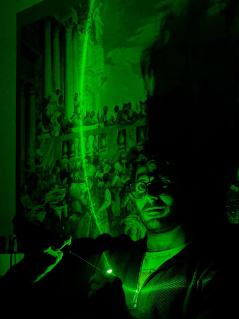

Hola, soy Matías Fernández Lakatos, físico que se ha especializado en inteligencia artificial y análisis de datos. Trabajo como Ingeniero de Investigación en Gradiant (Vigo, España), donde desarrollo soluciones inteligentes para la detección temprana de amenazas en ciberseguridad corporativa. Mi labor se centra en el diseño e implementación de modelos de aprendizaje automático no supervisado —como β-Variational Autoencoders, Autoencoders y métodos basados en árboles— aplicados al análisis de comportamiento en tiempo real sobre grandes volúmenes de datos. También participo en el desarrollo de herramientas de explicabilidad de modelos (XAI) y su integración en arquitecturas escalables con Kafka, Spark y Airflow. Antes de incorporarme a Gradiant, trabajé durante casi una década en la Facultad de Ingeniería de la Universidad de la República (Uruguay) como investigador, docente y asistente educativo. Allí realicé mi Doctorado en Física (Óptica), enfocándome en la visualización y caracterización de objetos de fase, el procesamiento digital de imágenes y el uso de técnicas estadísticas y de reconstrucción de fase. He complementado mi formación con un Máster en Big Data Analytics y cursos avanzados en Aprendizaje por Recompensas, Procesamiento de Imágenes por Computadora, Estadísticas Multivariadas Computacionales y Deep Learning para Visión por Computadora (basado en CS231n), consolidando mi perfil técnico en inteligencia artificial y análisis de datos. Con más de nueve años de experiencia en docencia e investigación, valoro especialmente el trabajo en equipo y el vínculo humano con los estudiantes. Disfruto transmitir conceptos complejos de forma accesible, fomentando la curiosidad y el pensamiento crítico. Estas experiencias fortalecieron mis habilidades de comunicación, colaboración, empatía y liderazgo, que hoy aplico en entornos profesionales multidisciplinarios. Fuera del ámbito técnico, me apasionan los juegos de mesa y la lectura. Sigo la filosofía de "viaje antes que destino", que refleja mi forma de entender el aprendizaje continuo y la exploración creativa.
Cursos sobre Bases de Datos a Gran Escala, Tecnologías de Gestión de Información No Estructurada, Tecnologías Informáticas para Datos Masivos, IoT, Estadísticas, Minería de Datos, Visualización de Datos, Inteligencia Empresarial y Aplicaciones y Casos de Uso Empresarial.
Ver TFMCursos en Laboratorio de Electrónica Fundamental e Instrumentación Científica, Óptica Coherente, Aprendizaje por Recompensas, Procesamiento de Imágenes por Computadora, Estadísticas Multivariadas Computacionales y Aprendizaje Profundo para Visión por Computadora (cs231n).
Tutores: Dr. José A. Ferrari, Dra. Erna Frins y Dr. Gastón A. Ayubi.
Tesis: Visualización y Caracterización de Objetos de FaseCursos de Mecánica Estadística, Teoría Cuántica de Campos I y II, y Relatividad General.
Tutores: Dr. Nicolás Wschebor y Dra. Marcela Peláez.
Tesis: Rol de los diversos acoplamientos en la cromodinámica cuántica infrarroja